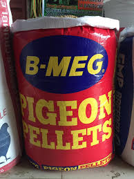

| 🕊️ PIGEON PELLET 🕊️ |
|  |
PIGEON PELLET 💰 Price: ₱26 per kilo 📌 Description: Pigeon Pellet is a nutritious feed designed specifically for pigeons. It provides the essential vitamins, minerals, and proteins to keep your birds healthy, active, and strong. ✅ Key Benefits: - Supports overall health and vitality - Strengthens feathers and muscles - Enhances flight and stamina - Balanced nutrition for daily feeding 🕊️ Best For: All types of pigeons 🕒 Feeding Guide: Feed daily with clean water. Adjust portions depending on the number and size of birds. |